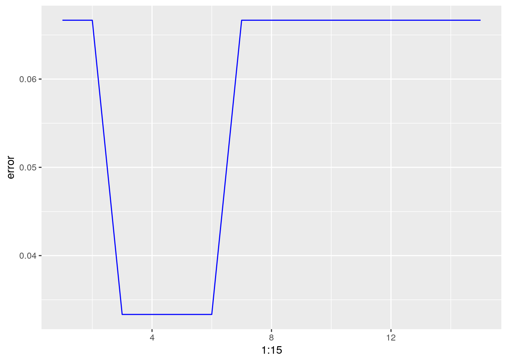

5 Nearest neighbours
5.1 Introduction
k-NN is by far the simplest method of supervised learning we will cover in this course. It is a non-parametric method that can be used for both classification (predicting class membership) and regression (estimating continuous variables). k-NN is categorized as instance based (memory based) learning, because all computation is deferred until classification. The most computationally demanding aspects of k-NN are finding neighbours and storing the entire learning set.
A simple k-NN classification rule (figure 5.1) would proceed as follows:
- when presented with a new observation, find the k closest samples in the learning set
- predict the class by majority vote

Figure 5.1: Illustration of k-nn classification. In this example we have two classes: blue squares and red triangles. The green circle represents a test object. If k=3 (solid line circle) the test object is assigned to the red triangle class. If k=5 the test object is assigned to the blue square class. By Antti Ajanki AnAj - Own work, CC BY-SA 3.0, https://commons.wikimedia.org/w/index.php?curid=2170282
A basic implementation of k-NN regression would calculate a summary (e.g. a distance, a voting summary) of the numerical outcome of the k nearest neighbours.
The number of neighbours k has an impact on the predictive performance of k-NN in both classification and regression. The optimal value of k (k is considered a hyperparameter) should be chosen using cross-validation.
How do we define and determine the similarity between observations? We use distance (or dissimilarity) metrics to compute the pairwise differences between observations. The most common distances are the Euclidean and Manhattan metrics;
Euclidean distance measures the straight-line distance between two samples (i.e., how the crow flies); it is the most widely used distance metric in k-nn, and will be used in the examples and exercises in this chapter. Manhattan measures the point-to-point travel time (i.e., city block) and is commonly used for binary predictors (e.g., one-hot encoded 0/1 indicator variables).
Euclidean distance: \[\begin{equation} distance\left(p,q\right)=\sqrt{\sum_{i=1}^{n} (p_i-q_i)^2} \end{equation}\]
Figure 5.2: Euclidean distance.
Manhattan distance: \[\begin{equation} distance\left(p,q\right)={\sum_{i=1}^{n} |p_i-q_i|} \end{equation}\]
There are other metrics to measure the distance between observations. For example, the Minkowski distance is a generalization of the Euclidean and Manhattan distances and is defined as
Minkowski distance: \[\begin{equation} distance\left(p,q\right)=\sqrt[p]{\sum_{i=1}^{n} (p_i-q_i)^p} \end{equation}\]
where p>0 (Han, Pei, and Kamber 2011). When p=2 the Minkowski distance is the Euclidean distance and when q=1 it is the Manhattan distance
5.2 Classification: simulated data
A simulated data set will be used to demonstrate:
- bias-variance trade-off
- the knn function in R
- plotting decision boundaries
- choosing the optimum value of k
The dataset has been partitioned into training and test sets.
Load data
load("data/example_binary_classification/bin_class_example.rda")
str(xtrain)## 'data.frame': 400 obs. of 2 variables:
## $ V1: num -0.223 0.944 2.36 1.846 1.732 ...
## $ V2: num -1.153 -0.827 -0.128 2.014 -0.574 ...str(xtest)## 'data.frame': 400 obs. of 2 variables:
## $ V1: num 2.09 2.3 2.07 1.65 1.18 ...
## $ V2: num -1.009 1.0947 0.1644 0.3243 -0.0277 ...summary(as.factor(ytrain))## 0 1
## 200 200summary(as.factor(ytest))## 0 1
## 200 200library(ggplot2)
library(GGally)
library(RColorBrewer)
point_shapes <- c(15,17)
point_colours <- brewer.pal(3,"Dark2")
point_size = 2
ggplot(xtrain, aes(V1,V2)) +
geom_point(col=point_colours[ytrain+1], shape=point_shapes[ytrain+1],
size=point_size) +
ggtitle("train") +
theme_bw() +
theme(plot.title = element_text(size=25, face="bold"), axis.text=element_text(size=15),
axis.title=element_text(size=20,face="bold"))
ggplot(xtest, aes(V1,V2)) +
geom_point(col=point_colours[ytest+1], shape=point_shapes[ytest+1],
size=point_size) +
ggtitle("test") +
theme_bw() +
theme(plot.title = element_text(size=25, face="bold"), axis.text=element_text(size=15),
axis.title=element_text(size=20,face="bold"))Figure 5.3: Scatterplots of the simulated training and test data sets that will be used in the demonstration of binary classification using k-nn
5.2.1 knn function
For k-nn classification and regression we will use the knn function in the package class.
library(class)Arguments to knn
train: matrix or data frame of training set cases.test: matrix or data frame of test set cases. A vector will be interpreted as a row vector for a single case.cl: factor of true classifications of training setk: number of neighbours considered.l: minimum vote for definite decision, otherwise doubt. (More precisely, less than k-l dissenting votes are allowed, even if k is increased by ties.)prob: If this is true, the proportion of the votes for the winning class are returned as attribute prob.use.all: controls handling of ties. If true, all distances equal to the kth largest are included. If false, a random selection of distances equal to the kth is chosen to use exactly k neighbours.
Let us perform k-nn on the training set with k=1. We will use the confusionMatrix function from the caret package to summarize performance of the classifier.
library(caret)## Warning in system("timedatectl", intern = TRUE): running command 'timedatectl'
## had status 1knn1train <- class::knn(train=xtrain, test=xtrain, cl=ytrain, k=1)
confusionMatrix(knn1train, as.factor(ytrain))## Confusion Matrix and Statistics
##
## Reference
## Prediction 0 1
## 0 200 0
## 1 0 200
##
## Accuracy : 1
## 95% CI : (0.9908, 1)
## No Information Rate : 0.5
## P-Value [Acc > NIR] : < 2.2e-16
##
## Kappa : 1
##
## Mcnemar's Test P-Value : NA
##
## Sensitivity : 1.0
## Specificity : 1.0
## Pos Pred Value : 1.0
## Neg Pred Value : 1.0
## Prevalence : 0.5
## Detection Rate : 0.5
## Detection Prevalence : 0.5
## Balanced Accuracy : 1.0
##
## 'Positive' Class : 0
## The classifier performs perfectly on the training set, because with k=1, each observation is being predicted by itself!
Now let use the training set to predict on the test set.
knn1test <- class::knn(train=xtrain, test=xtest, cl=ytrain, k=1)
confusionMatrix(knn1test, as.factor(ytest))## Confusion Matrix and Statistics
##
## Reference
## Prediction 0 1
## 0 131 81
## 1 69 119
##
## Accuracy : 0.625
## 95% CI : (0.5755, 0.6726)
## No Information Rate : 0.5
## P-Value [Acc > NIR] : 3.266e-07
##
## Kappa : 0.25
##
## Mcnemar's Test P-Value : 0.3691
##
## Sensitivity : 0.6550
## Specificity : 0.5950
## Pos Pred Value : 0.6179
## Neg Pred Value : 0.6330
## Prevalence : 0.5000
## Detection Rate : 0.3275
## Detection Prevalence : 0.5300
## Balanced Accuracy : 0.6250
##
## 'Positive' Class : 0
## Performance on the test set is not so good. This is an example of a classifier being over-fitted to the training set.
5.2.2 Plotting decision boundaries
Since we have just two dimensions we can visualize the decision boundary generated by the k-nn classifier in a 2D scatterplot. Situations where your original data set contains only two variables will be rare, but it is not unusual to reduce a high-dimensional data set to just two dimensions using the methods that will be discussed in chapter 3. Therefore, knowing how to plot decision boundaries will potentially be helpful for many different datasets and classifiers.
Create a grid so we can predict across the full range of our variables V1 and V2.
gridSize <- 150
v1limits <- c(min(c(xtrain[,1],xtest[,1])),max(c(xtrain[,1],xtest[,1])))
tmpV1 <- seq(v1limits[1],v1limits[2],len=gridSize)
v2limits <- c(min(c(xtrain[,2],xtest[,2])),max(c(xtrain[,2],xtest[,2])))
tmpV2 <- seq(v2limits[1],v2limits[2],len=gridSize)
xgrid <- expand.grid(tmpV1,tmpV2)
names(xgrid) <- names(xtrain)Predict values of all elements of grid.
knn1grid <- class::knn(train=xtrain, test=xgrid, cl=ytrain, k=1)
V3 <- as.numeric(as.vector(knn1grid))
xgrid <- cbind(xgrid, V3)Plot
point_shapes <- c(15,17)
point_colours <- brewer.pal(3,"Dark2")
point_size = 2
ggplot(xgrid, aes(V1,V2)) +
geom_point(col=point_colours[knn1grid], shape=16, size=0.3) +
geom_point(data=xtrain, aes(V1,V2), col=point_colours[ytrain+1],
shape=point_shapes[ytrain+1], size=point_size) +
geom_contour(data=xgrid, aes(x=V1, y=V2, z=V3), breaks=0.5, col="grey30") +
ggtitle("train") +
theme_bw() +
theme(plot.title = element_text(size=25, face="bold"), axis.text=element_text(size=15),
axis.title=element_text(size=20,face="bold"))
ggplot(xgrid, aes(V1,V2)) +
geom_point(col=point_colours[knn1grid], shape=16, size=0.3) +
geom_point(data=xtest, aes(V1,V2), col=point_colours[ytest+1],
shape=point_shapes[ytrain+1], size=point_size) +
geom_contour(data=xgrid, aes(x=V1, y=V2, z=V3), breaks=0.5, col="grey30") +
ggtitle("test") +
theme_bw() +
theme(plot.title = element_text(size=25, face="bold"), axis.text=element_text(size=15),
axis.title=element_text(size=20,face="bold"))Figure 5.4: Binary classification of the simulated training and test sets with k=1.
5.2.3 Bias-variance tradeoff
The bias–variance tradeoff is the problem of simultaneously minimizing two sources of error that prevent supervised learning algorithms from generalizing beyond their training set:
- The bias is error from erroneous assumptions in the learning algorithm. High bias can cause an algorithm to miss the relevant relations between features and target outputs (underfitting).
- The variance is error from sensitivity to small fluctuations in the training set. High variance can cause an algorithm to model the random noise in the training data, rather than the intended outputs (overfitting).
To demonstrate this phenomenon, let us look at the performance of the k-nn classifier over a range of values of k. First we will define a function to create a sequence of log spaced values. This is the lseq function from the emdbook package:
lseq <- function(from, to, length.out) {
exp(seq(log(from), log(to), length.out = length.out))
}Get log spaced sequence of length 20, round and then remove any duplicates resulting from rounding.
s <- unique(round(lseq(1,400,20)))
length(s)## [1] 19train_error <- sapply(s, function(i){
yhat <- knn(xtrain, xtrain, ytrain, i)
return(1-mean(as.numeric(as.vector(yhat))==ytrain))
})
test_error <- sapply(s, function(i){
yhat <- knn(xtrain, xtest, ytrain, i)
return(1-mean(as.numeric(as.vector(yhat))==ytest))
})
k <- rep(s, 2)
set <- c(rep("train", length(s)), rep("test", length(s)))
error <- c(train_error, test_error)
misclass_errors <- data.frame(k, set, error)ggplot(misclass_errors, aes(x=k, y=error, group=set)) +
geom_line(aes(colour=set, linetype=set), size=1.5) +
scale_x_log10() +
ylab("Misclassification Errors") +
theme_bw() +
theme(legend.position = c(0.5, 0.25), legend.title=element_blank(),
legend.text=element_text(size=12),
axis.title.x=element_text(face="italic", size=12))Figure 5.5: Misclassification errors as a function of neighbourhood size.
We see excessive variance (overfitting) at low values of k, and bias (underfitting) at high values of k.
5.2.4 Choosing k
We will use the caret library. Caret provides a unified interface to a huge range of supervised learning packages in R. The design of its tools encourages best practice, especially in relation to cross-validation and testing. Additionally, it has automatic parallel processing built in, which is a significant advantage when dealing with large data sets.
library(caret)To take advantage of Caret’s parallel processing functionality, we simply need to load the doMC package and register workers:
library(doMC)## Loading required package: foreach## Loading required package: iterators## Loading required package: parallelregisterDoMC(detectCores())To find out how many cores we have registered we can use:
getDoParWorkers()## [1] 8The caret function train is used to fit predictive models over different values of k. The function trainControl is used to specify a list of computational and resampling options, which will be passed to train. We will start by configuring our cross-validation procedure using trainControl.
We would like to make this demonstration reproducible and because we will be running the models in parallel, using the set.seed function alone is not sufficient. In addition to using set.seed we have to make use of the optional seeds argument to trainControl. We need to supply seeds with a list of integers that will be used to set the seed at each sampling iteration. The list is required to have a length of B+1, where B is the number of resamples. We will be repeating 10-fold cross-validation a total of ten times and so our list must have a length of 101. The first B elements of the list are required to be vectors of integers of length M, where M is the number of models being evaluated (in this case 19). The last element of the list only needs to be a single integer, which will be used for the final model.
First we generate our list of seeds.
set.seed(42)
seeds <- vector(mode = "list", length = 101)
for(i in 1:100) seeds[[i]] <- sample.int(1000, 19)
seeds[[101]] <- sample.int(1000,1)We can now use trainControl to create a list of computational options for resampling.
tc <- trainControl(method="repeatedcv",
number = 10,
repeats = 10,
seeds = seeds)There are two options for choosing the values of k to be evaluated by the train function:
- Pass a data.frame of values of k to the tuneGrid argument of train.
- Specify the number of different levels of k using the tuneLength function and allow train to pick the actual values.
We will use the first option, so that we can try the values of k we examined earlier. The vector of values of k we created earlier should be converted into a data.frame.
s <- data.frame(s)
names(s) <- "k"We are now ready to run the cross-validation.
knnFit <- train(xtrain, as.factor(ytrain),
method="knn",
tuneGrid=s,
trControl=tc)
knnFit## k-Nearest Neighbors
##
## 400 samples
## 2 predictor
## 2 classes: '0', '1'
##
## No pre-processing
## Resampling: Cross-Validated (10 fold, repeated 10 times)
## Summary of sample sizes: 360, 360, 360, 360, 360, 360, ...
## Resampling results across tuning parameters:
##
## k Accuracy Kappa
## 1 0.63575 0.2715
## 2 0.63700 0.2740
## 3 0.67250 0.3450
## 4 0.67700 0.3540
## 5 0.69425 0.3885
## 7 0.71250 0.4250
## 9 0.71525 0.4305
## 12 0.71275 0.4255
## 17 0.72500 0.4500
## 23 0.73175 0.4635
## 32 0.73675 0.4735
## 44 0.73900 0.4780
## 60 0.74925 0.4985
## 83 0.75325 0.5065
## 113 0.73275 0.4655
## 155 0.72700 0.4540
## 213 0.70950 0.4190
## 292 0.69275 0.3855
## 400 0.49900 -0.0020
##
## Accuracy was used to select the optimal model using the largest value.
## The final value used for the model was k = 83.Cohen’s Kappa: \[\begin{equation} Kappa = \frac{O-E}{1-E} \tag{5.1} \end{equation}\]
where O is the observed accuracy and E is the expected accuracy based on the marginal totals of the confusion matrix. Cohen’s Kappa takes values between -1 and 1; a value of zero indicates no agreement between the observed and predicted classes, while a value of one shows perfect concordance of the model prediction and the observed classes. If the prediction is in the opposite direction of the truth, a negative value will be obtained, but large negative values are rare in practice (Kuhn and Johnson 2013).
We can plot accuracy (determined from repeated cross-validation) as a function of neighbourhood size.
plot(knnFit)Figure 5.6: Accuracy (repeated cross-validation) as a function of neighbourhood size.
We can also plot other performance metrics, such as Cohen’s Kappa, using the metric argument.
plot(knnFit, metric="Kappa")Figure 5.7: Cohen’s Kappa (repeated cross-validation) as a function of neighbourhood size.
Let us now evaluate how our classifier performs on the test set.
test_pred <- predict(knnFit, xtest)
confusionMatrix(test_pred, as.factor(ytest))## Confusion Matrix and Statistics
##
## Reference
## Prediction 0 1
## 0 154 68
## 1 46 132
##
## Accuracy : 0.715
## 95% CI : (0.668, 0.7588)
## No Information Rate : 0.5
## P-Value [Acc > NIR] : <2e-16
##
## Kappa : 0.43
##
## Mcnemar's Test P-Value : 0.0492
##
## Sensitivity : 0.7700
## Specificity : 0.6600
## Pos Pred Value : 0.6937
## Neg Pred Value : 0.7416
## Prevalence : 0.5000
## Detection Rate : 0.3850
## Detection Prevalence : 0.5550
## Balanced Accuracy : 0.7150
##
## 'Positive' Class : 0
## Scatterplots with decision boundaries can be plotted using the methods described earlier. First create a grid so we can predict across the full range of our variables V1 and V2:
gridSize <- 150
v1limits <- c(min(c(xtrain[,1],xtest[,1])),max(c(xtrain[,1],xtest[,1])))
tmpV1 <- seq(v1limits[1],v1limits[2],len=gridSize)
v2limits <- c(min(c(xtrain[,2],xtest[,2])),max(c(xtrain[,2],xtest[,2])))
tmpV2 <- seq(v2limits[1],v2limits[2],len=gridSize)
xgrid <- expand.grid(tmpV1,tmpV2)
names(xgrid) <- names(xtrain)Predict values of all elements of grid.
knn1grid <- predict(knnFit, xgrid)
V3 <- as.numeric(as.vector(knn1grid))
xgrid <- cbind(xgrid, V3)Plot
point_shapes <- c(15,17)
point_colours <- brewer.pal(3,"Dark2")
point_size = 2
ggplot(xgrid, aes(V1,V2)) +
geom_point(col=point_colours[knn1grid], shape=16, size=0.3) +
geom_point(data=xtrain, aes(V1,V2), col=point_colours[ytrain+1],
shape=point_shapes[ytrain+1], size=point_size) +
geom_contour(data=xgrid, aes(x=V1, y=V2, z=V3), breaks=0.5, col="grey30") +
ggtitle("train") +
theme_bw() +
theme(plot.title = element_text(size=25, face="bold"), axis.text=element_text(size=15),
axis.title=element_text(size=20,face="bold"))
ggplot(xgrid, aes(V1,V2)) +
geom_point(col=point_colours[knn1grid], shape=16, size=0.3) +
geom_point(data=xtest, aes(V1,V2), col=point_colours[ytest+1],
shape=point_shapes[ytrain+1], size=point_size) +
geom_contour(data=xgrid, aes(x=V1, y=V2, z=V3), breaks=0.5, col="grey30") +
ggtitle("test") +
theme_bw() +
theme(plot.title = element_text(size=25, face="bold"), axis.text=element_text(size=15),
axis.title=element_text(size=20,face="bold"))Figure 5.8: Binary classification of the simulated training and test sets with k=83.
5.3 Example on the Iris dataset
From the iris manual page:
The famous (Fisher’s or Anderson’s) Iris data set, first presented by Fisher in 1936 (http://archive.ics.uci.edu/ml/datasets/Iris), gives the measurements in centimeters of the variables sepal length and width and petal length and width, respectively, for 50 flowers from each of 3 species of iris. The species are Iris setosa, versicolor, and virginica. One class is linearly separable from the other two; the latter are not linearly separable from each other. The data base contains the following attributes: 1). sepal length in cm 2). sepal width in cm 3). petal length in cm 4). petal width in cm 5). classes: - Iris Setosa - Iris Versicolour - Iris Virginica
library(datasets)
library(gridExtra)
library(GGally)
data(iris) ##loads the dataset, which can be accessed under the variable name iris
summary(iris) ##presents the 5 figure summary of the dataset## Sepal.Length Sepal.Width Petal.Length Petal.Width
## Min. :4.300 Min. :2.000 Min. :1.000 Min. :0.100
## 1st Qu.:5.100 1st Qu.:2.800 1st Qu.:1.600 1st Qu.:0.300
## Median :5.800 Median :3.000 Median :4.350 Median :1.300
## Mean :5.843 Mean :3.057 Mean :3.758 Mean :1.199
## 3rd Qu.:6.400 3rd Qu.:3.300 3rd Qu.:5.100 3rd Qu.:1.800
## Max. :7.900 Max. :4.400 Max. :6.900 Max. :2.500
## Species
## setosa :50
## versicolor:50
## virginica :50
##
##
## str(iris) ##presents the structure of the iris dataframe## 'data.frame': 150 obs. of 5 variables:
## $ Sepal.Length: num 5.1 4.9 4.7 4.6 5 5.4 4.6 5 4.4 4.9 ...
## $ Sepal.Width : num 3.5 3 3.2 3.1 3.6 3.9 3.4 3.4 2.9 3.1 ...
## $ Petal.Length: num 1.4 1.4 1.3 1.5 1.4 1.7 1.4 1.5 1.4 1.5 ...
## $ Petal.Width : num 0.2 0.2 0.2 0.2 0.2 0.4 0.3 0.2 0.2 0.1 ...
## $ Species : Factor w/ 3 levels "setosa","versicolor",..: 1 1 1 1 1 1 1 1 1 1 ...Explore the data: visualize the numerical values using the violin plots. They are similar to the Box Plots but they allow the illustration of the number of points at a particular value by the width of the shapes. We can also include the marker for the median and a box for the interquartile range.
VpSl <- ggplot(iris, aes(Species, Sepal.Length, fill=Species)) +
geom_violin(aes(color = Species), trim = T)+
scale_y_continuous("Sepal Length", breaks= seq(0,30, by=.5))+
geom_boxplot(width=0.1)+
theme(legend.position="none")
VpSw <- ggplot(iris, aes(Species, Sepal.Width, fill=Species)) +
geom_violin(aes(color = Species), trim = T)+
scale_y_continuous("Sepal Width", breaks= seq(0,30, by=.5))+
geom_boxplot(width=0.1)+
theme(legend.position="none")
VpPl <- ggplot(iris, aes(Species, Petal.Length, fill=Species)) +
geom_violin(aes(color = Species), trim = T)+
scale_y_continuous("Petal Length", breaks= seq(0,30, by=.5))+
geom_boxplot(width=0.1)+
theme(legend.position="none")
VpPw <- ggplot(iris, aes(Species, Petal.Width, fill=Species)) +
geom_violin(aes(color = Species), trim = T)+
scale_y_continuous("Petal Width", breaks= seq(0,30, by=.5))+
geom_boxplot(width=0.1)+
labs(title = "Iris Box Plot", x = "Species")
# Plot all visualizations
grid.arrange(VpSl + ggtitle(""),
VpSw + ggtitle(""),
VpPl + ggtitle(""),
VpPw + ggtitle(""),
nrow = 2)ggpairs(iris, ggplot2::aes(colour = Species, alpha = 0.4)) 
Divide the Iris dataset into training and test dataset to apply KNN classification. 80% of the data is used for training while the KNN classification is tested on the remaining 20% of the data.
iris[,1:4] <- scale(iris[,1:4])
setosa<- rbind(iris[iris$Species=="setosa",])
versicolor<- rbind(iris[iris$Species=="versicolor",])
virginica<- rbind(iris[iris$Species=="virginica",])
ind <- sample(1:nrow(setosa), nrow(setosa)*0.8)
iris.train<- rbind(setosa[ind,], versicolor[ind,], virginica[ind,])
iris.test<- rbind(setosa[-ind,], versicolor[-ind,], virginica[-ind,])
iris[,1:4] <- scale(iris[,1:4])Then train and evaluate
library(class)
library(gmodels)
error <- c()
for (i in 1:15)
{
knn.fit <- knn(train = iris.train[,1:4], test = iris.test[,1:4], cl = iris.train$Species, k = i)
error[i] = 1- mean(knn.fit == iris.test$Species)
}
ggplot(data = data.frame(error), aes(x = 1:15, y = error)) +
geom_line(color = "Blue")
iris_test_pred1 <- knn(train = iris.train[,1:4], test = iris.test[,1:4], cl = iris.train$Species,k = 7,prob=TRUE)
table(iris.test$Species,iris_test_pred1)## iris_test_pred1
## setosa versicolor virginica
## setosa 10 0 0
## versicolor 0 9 1
## virginica 0 1 9CrossTable(x = iris.test$Species, y = iris_test_pred1,prop.chisq=FALSE) ##
##
## Cell Contents
## |-------------------------|
## | N |
## | N / Row Total |
## | N / Col Total |
## | N / Table Total |
## |-------------------------|
##
##
## Total Observations in Table: 30
##
##
## | iris_test_pred1
## iris.test$Species | setosa | versicolor | virginica | Row Total |
## ------------------|------------|------------|------------|------------|
## setosa | 10 | 0 | 0 | 10 |
## | 1.000 | 0.000 | 0.000 | 0.333 |
## | 1.000 | 0.000 | 0.000 | |
## | 0.333 | 0.000 | 0.000 | |
## ------------------|------------|------------|------------|------------|
## versicolor | 0 | 9 | 1 | 10 |
## | 0.000 | 0.900 | 0.100 | 0.333 |
## | 0.000 | 0.900 | 0.100 | |
## | 0.000 | 0.300 | 0.033 | |
## ------------------|------------|------------|------------|------------|
## virginica | 0 | 1 | 9 | 10 |
## | 0.000 | 0.100 | 0.900 | 0.333 |
## | 0.000 | 0.100 | 0.900 | |
## | 0.000 | 0.033 | 0.300 | |
## ------------------|------------|------------|------------|------------|
## Column Total | 10 | 10 | 10 | 30 |
## | 0.333 | 0.333 | 0.333 | |
## ------------------|------------|------------|------------|------------|
##
## 5.4 Classification: cell segmentation
The simulated data in our previous example were randomly sampled from a normal (Gaussian) distribution and so did not require pre-processing. In practice, data collected in real studies often require transformation and/or filtering. Furthermore, the simulated data contained only two predictors; in practice, you are likely to have many variables. For example, in a gene expression study you might have thousands of variables. When using k-nn for classification or regression, removing variables that are not associated with the outcome of interest may improve the predictive power of the model. The process of choosing the best predictors from the available variables is known as feature selection. For honest estimates of model performance, pre-processing and feature selection should be performed within the loops of the cross validation process.
5.4.1 Cell segmentation data set
Pre-processing and feature selection will be demonstrated using the cell segmentation data of (Hill et al. (2007)). High Content Screening (HCS) automates the collection and analysis of biological images of cultured cells. However, image segmentation algorithms are not perfect and sometimes do not reliably quantitate the morphology of cells. Hill et al. sought to differentiate between well- and poorly-segmented cells based on the morphometric data collected in HCS. If poorly-segmented cells can be automatically detected and eliminated, then the accuracy of studies using HCS will be improved. Hill et al. collected morphometric data on 2019 cells and asked human reviewers to classify the cells as well- or poorly-segmented.
Figure 5.9: Image segmentation in high content screening. Images b and c are examples of well-segmented cells; d and e show poor-segmentation. Source: Hill(2007) https://doi.org/10.1186/1471-2105-8-340
This data set is one of several included in caret.
data(segmentationData)
str(segmentationData)## 'data.frame': 2019 obs. of 61 variables:
## $ Cell : int 207827637 207932307 207932463 207932470 207932455 207827656 207827659 207827661 207932479 207932480 ...
## $ Case : Factor w/ 2 levels "Test","Train": 1 2 2 2 1 1 1 1 1 1 ...
## $ Class : Factor w/ 2 levels "PS","WS": 1 1 2 1 1 2 2 1 2 2 ...
## $ AngleCh1 : num 143.25 133.75 106.65 69.15 2.89 ...
## $ AreaCh1 : int 185 819 431 298 285 172 177 251 495 384 ...
## $ AvgIntenCh1 : num 15.7 31.9 28 19.5 24.3 ...
## $ AvgIntenCh2 : num 4.95 206.88 116.32 102.29 112.42 ...
## $ AvgIntenCh3 : num 9.55 69.92 63.94 28.22 20.47 ...
## $ AvgIntenCh4 : num 2.21 164.15 106.7 31.03 40.58 ...
## $ ConvexHullAreaRatioCh1 : num 1.12 1.26 1.05 1.2 1.11 ...
## $ ConvexHullPerimRatioCh1: num 0.92 0.797 0.935 0.866 0.957 ...
## $ DiffIntenDensityCh1 : num 29.5 31.9 32.5 26.7 31.6 ...
## $ DiffIntenDensityCh3 : num 13.8 43.1 36 22.9 21.7 ...
## $ DiffIntenDensityCh4 : num 6.83 79.31 51.36 26.39 25.03 ...
## $ EntropyIntenCh1 : num 4.97 6.09 5.88 5.42 5.66 ...
## $ EntropyIntenCh3 : num 4.37 6.64 6.68 5.44 5.29 ...
## $ EntropyIntenCh4 : num 2.72 7.88 7.14 5.78 5.24 ...
## $ EqCircDiamCh1 : num 15.4 32.3 23.4 19.5 19.1 ...
## $ EqEllipseLWRCh1 : num 3.06 1.56 1.38 3.39 2.74 ...
## $ EqEllipseOblateVolCh1 : num 337 2233 802 725 608 ...
## $ EqEllipseProlateVolCh1 : num 110 1433 583 214 222 ...
## $ EqSphereAreaCh1 : num 742 3279 1727 1195 1140 ...
## $ EqSphereVolCh1 : num 1901 17654 6751 3884 3621 ...
## $ FiberAlign2Ch3 : num 1 1.49 1.3 1.22 1.49 ...
## $ FiberAlign2Ch4 : num 1 1.35 1.52 1.73 1.38 ...
## $ FiberLengthCh1 : num 27 64.3 21.1 43.1 34.7 ...
## $ FiberWidthCh1 : num 7.41 13.17 21.14 7.4 8.48 ...
## $ IntenCoocASMCh3 : num 0.01118 0.02805 0.00686 0.03096 0.02277 ...
## $ IntenCoocASMCh4 : num 0.05045 0.01259 0.00614 0.01103 0.07969 ...
## $ IntenCoocContrastCh3 : num 40.75 8.23 14.45 7.3 15.85 ...
## $ IntenCoocContrastCh4 : num 13.9 6.98 16.7 13.39 3.54 ...
## $ IntenCoocEntropyCh3 : num 7.2 6.82 7.58 6.31 6.78 ...
## $ IntenCoocEntropyCh4 : num 5.25 7.1 7.67 7.2 5.5 ...
## $ IntenCoocMaxCh3 : num 0.0774 0.1532 0.0284 0.1628 0.1274 ...
## $ IntenCoocMaxCh4 : num 0.172 0.0739 0.0232 0.0775 0.2785 ...
## $ KurtIntenCh1 : num -0.6567 -0.2488 -0.2935 0.6259 0.0421 ...
## $ KurtIntenCh3 : num -0.608 -0.331 1.051 0.128 0.952 ...
## $ KurtIntenCh4 : num 0.726 -0.265 0.151 -0.347 -0.195 ...
## $ LengthCh1 : num 26.2 47.2 28.1 37.9 36 ...
## $ NeighborAvgDistCh1 : num 370 174 158 206 205 ...
## $ NeighborMinDistCh1 : num 99.1 30.1 34.9 33.1 27 ...
## $ NeighborVarDistCh1 : num 128 81.4 90.4 116.9 111 ...
## $ PerimCh1 : num 68.8 154.9 84.6 101.1 86.5 ...
## $ ShapeBFRCh1 : num 0.665 0.54 0.724 0.589 0.6 ...
## $ ShapeLWRCh1 : num 2.46 1.47 1.33 2.83 2.73 ...
## $ ShapeP2ACh1 : num 1.88 2.26 1.27 2.55 2.02 ...
## $ SkewIntenCh1 : num 0.455 0.399 0.472 0.882 0.517 ...
## $ SkewIntenCh3 : num 0.46 0.62 0.971 1 1.177 ...
## $ SkewIntenCh4 : num 1.233 0.527 0.325 0.604 0.926 ...
## $ SpotFiberCountCh3 : int 1 4 2 4 1 1 0 2 1 1 ...
## $ SpotFiberCountCh4 : num 5 12 7 8 8 5 5 8 12 8 ...
## $ TotalIntenCh1 : int 2781 24964 11552 5545 6603 53779 43950 4401 7593 6512 ...
## $ TotalIntenCh2 : num 701 160998 47511 28870 30306 ...
## $ TotalIntenCh3 : int 1690 54675 26344 8042 5569 21234 20929 4136 6488 7503 ...
## $ TotalIntenCh4 : int 392 128368 43959 8843 11037 57231 46187 373 24325 23162 ...
## $ VarIntenCh1 : num 12.5 18.8 17.3 13.8 15.4 ...
## $ VarIntenCh3 : num 7.61 56.72 37.67 30.01 20.5 ...
## $ VarIntenCh4 : num 2.71 118.39 49.47 24.75 45.45 ...
## $ WidthCh1 : num 10.6 32.2 21.2 13.4 13.2 ...
## $ XCentroid : int 42 215 371 487 283 191 180 373 236 303 ...
## $ YCentroid : int 14 347 252 295 159 127 138 181 467 468 ...The first column of segmentationData is a unique identifier for each cell and the second column is a factor indicating how the observations were characterized into training and test sets in the original study; these two variables are irrelevant for the purposes of this demonstration and so can be discarded.
The third column Class contains the class labels: PS (poorly-segmented) and WS (well-segmented). The last two columns are cell centroids and can be ignored. Columns 4-59 are the 58 morphological measurements available to be used as predictors. Let’s put the class labels in a vector and the predictors in their own data.frame.
segClass <- segmentationData$Class
segData <- segmentationData[,4:59]5.4.2 Data splitting
Before starting analysis we must partition the data into training and test sets, using the createDataPartition function in caret.
set.seed(42)
trainIndex <- createDataPartition(y=segClass, times=1, p=0.5, list=F)
segDataTrain <- segData[trainIndex,]
segDataTest <- segData[-trainIndex,]
segClassTrain <- segClass[trainIndex]
segClassTest <- segClass[-trainIndex]This results in balanced class distributions within the splits:
summary(segClassTrain)## PS WS
## 650 360summary(segClassTest)## PS WS
## 650 359N.B. The test set is set aside for now. It will be used only ONCE, to test the final model.
5.4.3 Identification of data quality issues
Let’s check our training data set for some undesirable characteristics which may impact model performance and should be addressed through pre-processing.
5.4.3.1 Zero and near zero-variance predictors
The function nearZeroVar identifies predictors that have one unique value. It also diagnoses predictors having both of the following characteristics:
- very few unique values relative to the number of samples
- the ratio of the frequency of the most common value to the frequency of the 2nd most common value is large.
Such zero and near zero-variance predictors have a deleterious impact on modelling and may lead to unstable fits.
nzv <- nearZeroVar(segDataTrain, saveMetrics=T)
nzv## freqRatio percentUnique zeroVar nzv
## AngleCh1 1.000000 100.000000 FALSE FALSE
## AreaCh1 1.083333 38.217822 FALSE FALSE
## AvgIntenCh1 1.000000 100.000000 FALSE FALSE
## AvgIntenCh2 3.000000 99.801980 FALSE FALSE
## AvgIntenCh3 1.000000 100.000000 FALSE FALSE
## AvgIntenCh4 1.000000 100.000000 FALSE FALSE
## ConvexHullAreaRatioCh1 1.000000 98.415842 FALSE FALSE
## ConvexHullPerimRatioCh1 1.000000 100.000000 FALSE FALSE
## DiffIntenDensityCh1 1.000000 100.000000 FALSE FALSE
## DiffIntenDensityCh3 2.000000 99.900990 FALSE FALSE
## DiffIntenDensityCh4 1.000000 100.000000 FALSE FALSE
## EntropyIntenCh1 1.000000 100.000000 FALSE FALSE
## EntropyIntenCh3 1.000000 100.000000 FALSE FALSE
## EntropyIntenCh4 1.000000 100.000000 FALSE FALSE
## EqCircDiamCh1 1.083333 38.217822 FALSE FALSE
## EqEllipseLWRCh1 1.000000 100.000000 FALSE FALSE
## EqEllipseOblateVolCh1 1.000000 100.000000 FALSE FALSE
## EqEllipseProlateVolCh1 1.000000 100.000000 FALSE FALSE
## EqSphereAreaCh1 1.083333 38.217822 FALSE FALSE
## EqSphereVolCh1 1.083333 38.217822 FALSE FALSE
## FiberAlign2Ch3 1.173913 95.247525 FALSE FALSE
## FiberAlign2Ch4 7.000000 93.861386 FALSE FALSE
## FiberLengthCh1 1.000000 93.267327 FALSE FALSE
## FiberWidthCh1 1.000000 93.267327 FALSE FALSE
## IntenCoocASMCh3 1.000000 100.000000 FALSE FALSE
## IntenCoocASMCh4 1.000000 100.000000 FALSE FALSE
## IntenCoocContrastCh3 1.000000 100.000000 FALSE FALSE
## IntenCoocContrastCh4 1.000000 100.000000 FALSE FALSE
## IntenCoocEntropyCh3 1.000000 100.000000 FALSE FALSE
## IntenCoocEntropyCh4 1.000000 100.000000 FALSE FALSE
## IntenCoocMaxCh3 1.333333 93.069307 FALSE FALSE
## IntenCoocMaxCh4 1.250000 94.851485 FALSE FALSE
## KurtIntenCh1 1.000000 100.000000 FALSE FALSE
## KurtIntenCh3 1.000000 100.000000 FALSE FALSE
## KurtIntenCh4 1.000000 100.000000 FALSE FALSE
## LengthCh1 1.000000 100.000000 FALSE FALSE
## NeighborAvgDistCh1 1.000000 100.000000 FALSE FALSE
## NeighborMinDistCh1 1.583333 41.881188 FALSE FALSE
## NeighborVarDistCh1 1.000000 100.000000 FALSE FALSE
## PerimCh1 1.000000 62.970297 FALSE FALSE
## ShapeBFRCh1 1.000000 100.000000 FALSE FALSE
## ShapeLWRCh1 1.000000 100.000000 FALSE FALSE
## ShapeP2ACh1 1.000000 99.702970 FALSE FALSE
## SkewIntenCh1 1.000000 100.000000 FALSE FALSE
## SkewIntenCh3 1.000000 100.000000 FALSE FALSE
## SkewIntenCh4 1.000000 100.000000 FALSE FALSE
## SpotFiberCountCh3 1.260870 1.089109 FALSE FALSE
## SpotFiberCountCh4 1.092199 2.871287 FALSE FALSE
## TotalIntenCh1 1.000000 98.613861 FALSE FALSE
## TotalIntenCh2 1.000000 99.009901 FALSE FALSE
## TotalIntenCh3 1.000000 99.306931 FALSE FALSE
## TotalIntenCh4 1.000000 99.207921 FALSE FALSE
## VarIntenCh1 1.000000 100.000000 FALSE FALSE
## VarIntenCh3 1.000000 100.000000 FALSE FALSE
## VarIntenCh4 1.000000 100.000000 FALSE FALSE
## WidthCh1 1.000000 100.000000 FALSE FALSE5.4.3.2 Scaling
The variables in this data set are on different scales, for example:
summary(segDataTrain$IntenCoocASMCh4)## Min. 1st Qu. Median Mean 3rd Qu. Max.
## 0.004514 0.017687 0.049861 0.097286 0.111304 0.867845summary(segDataTrain$TotalIntenCh2)## Min. 1st Qu. Median Mean 3rd Qu. Max.
## 1 12639 50160 53165 73527 363311In this situation it is important to centre and scale each predictor. A predictor variable is centered by subtracting the mean of the predictor from each value. To scale a predictor variable, each value is divided by its standard deviation. After centring and scaling the predictor variable has a mean of 0 and a standard deviation of 1.
5.4.3.3 Skewness
Many of the predictors in the segmentation data set exhibit skewness, i.e. the distribution of their values is asymmetric, for example:
qplot(segDataTrain$IntenCoocASMCh3, binwidth=0.1) +
xlab("IntenCoocASMCh3") +
theme_bw()Figure 5.10: Example of a predictor from the segmentation data set showing skewness.
caret provides various methods for transforming skewed variables to normality, including the Box-Cox (Box and Cox 1964) and Yeo-Johnson (Yeo and Johnson 2000) transformations.
5.4.4 Fit model
Generate a list of seeds.
set.seed(42)
seeds <- vector(mode = "list", length = 26)
for(i in 1:25) seeds[[i]] <- sample.int(1000, 50)
seeds[[26]] <- sample.int(1000,1)Create a list of computational options for resampling. In the interest of speed for this demonstration, we will perform 5-fold cross-validation a total of 5 times. In practice we would use a larger number of folds and repetitions.
train_ctrl <- trainControl(method="repeatedcv",
number = 5,
repeats = 5,
#preProcOptions=list(cutoff=0.75),
seeds = seeds)Create a grid of values of k for evaluation.
tuneParam <- data.frame(k=seq(5,500,10))To deal with the issues of scaling, skewness and highly correlated predictors identified earlier, we need to pre-process the data. We will use the Yeo-Johnson transformation to reduce skewness, because it can deal with the zero values present in some of the predictors. Ideally the pre-processing procedures would be performed within each cross-validation loop, using the following command:
knnFit <- train(segDataTrain, segClassTrain,
method="knn",
preProcess = c("YeoJohnson", "center", "scale", "corr"),
tuneGrid=tuneParam,
trControl=train_ctrl)However, this is time-consuming, so for the purposes of this demonstration we will pre-process the entire training data-set before proceeding with training and cross-validation.
transformations <- preProcess(segDataTrain,
method=c("YeoJohnson", "center", "scale", "corr"),
cutoff=0.75)
segDataTrain <- predict(transformations, segDataTrain)The cutoff refers to the correlation coefficient threshold.
str(segDataTrain)## 'data.frame': 1010 obs. of 23 variables:
## $ AngleCh1 : num 0.854 0.352 -0.383 -0.99 1.565 ...
## $ ConvexHullPerimRatioCh1: num -1.314 0.494 -0.416 1.241 1.129 ...
## $ DiffIntenDensityCh3 : num -0.3311 -0.5341 -1.0142 0.0933 -0.2125 ...
## $ EntropyIntenCh1 : num -0.65 -0.958 -1.694 0.615 0.481 ...
## $ EqSphereVolCh1 : num 1.84 1.07 0.38 -1.18 -1.09 ...
## $ FiberAlign2Ch3 : num 0.122 -0.602 -0.907 -0.567 -0.814 ...
## $ FiberAlign2Ch4 : num -0.321 0.389 1.297 -0.281 0.486 ...
## $ FiberWidthCh1 : num 0.859 2.033 -0.767 0.696 0.741 ...
## $ IntenCoocASMCh3 : num -0.492 -0.645 -0.471 -0.631 -0.636 ...
## $ IntenCoocASMCh4 : num -0.633 -0.681 -0.644 -0.658 -0.665 ...
## $ IntenCoocContrastCh3 : num 0.00893 0.7834 -0.13895 0.01205 0.61482 ...
## $ IntenCoocContrastCh4 : num 0.106 1.403 1.057 0.597 1.469 ...
## $ KurtIntenCh1 : num -0.316 -0.383 0.51 -0.243 0.242 ...
## $ KurtIntenCh3 : num -1.0756 -0.0959 -0.6256 -1.8307 -1.4251 ...
## $ KurtIntenCh4 : num 0.0297 0.4049 -0.0657 -0.1372 -0.7716 ...
## $ NeighborMinDistCh1 : num 0.271 0.685 0.535 -1.732 -1.732 ...
## $ NeighborVarDistCh1 : num -1.169 -0.745 0.538 -0.482 -0.537 ...
## $ ShapeBFRCh1 : num -0.591 1.231 -0.104 0.862 1.453 ...
## $ ShapeLWRCh1 : num -0.328 -0.72 1.488 -1.792 -1.678 ...
## $ SpotFiberCountCh3 : num 1.311 0.304 1.311 -0.453 -1.664 ...
## $ TotalIntenCh1 : num 0.315 -0.507 -1.423 1.011 0.839 ...
## $ TotalIntenCh2 : num 1.63 0.21 -0.2 1.09 1 ...
## $ VarIntenCh4 : num 0.295 -0.554 -1.103 0.807 0.35 ...Perform cross validation to find best value of k.
knnFit <- train(segDataTrain, segClassTrain,
method="knn",
tuneGrid=tuneParam,
trControl=train_ctrl)
knnFit## k-Nearest Neighbors
##
## 1010 samples
## 23 predictor
## 2 classes: 'PS', 'WS'
##
## No pre-processing
## Resampling: Cross-Validated (5 fold, repeated 5 times)
## Summary of sample sizes: 808, 808, 808, 808, 808, 808, ...
## Resampling results across tuning parameters:
##
## k Accuracy Kappa
## 5 0.7986139 0.5612788
## 15 0.8071287 0.5834268
## 25 0.8063366 0.5809096
## 35 0.8057426 0.5804170
## 45 0.8011881 0.5707377
## 55 0.8025743 0.5740795
## 65 0.8029703 0.5736852
## 75 0.8021782 0.5708545
## 85 0.7994059 0.5653635
## 95 0.8001980 0.5672397
## 105 0.7992079 0.5650183
## 115 0.8000000 0.5662863
## 125 0.8013861 0.5695369
## 135 0.8011881 0.5680439
## 145 0.8015842 0.5681434
## 155 0.8035644 0.5714389
## 165 0.8025743 0.5688528
## 175 0.8019802 0.5675416
## 185 0.8021782 0.5666971
## 195 0.7982178 0.5572158
## 205 0.7976238 0.5553098
## 215 0.7998020 0.5585649
## 225 0.7978218 0.5534856
## 235 0.7956436 0.5474332
## 245 0.7944554 0.5438308
## 255 0.7946535 0.5432198
## 265 0.7954455 0.5450816
## 275 0.7948515 0.5430274
## 285 0.7944554 0.5414309
## 295 0.7944554 0.5404298
## 305 0.7914851 0.5320417
## 315 0.7885149 0.5241017
## 325 0.7891089 0.5249205
## 335 0.7859406 0.5160910
## 345 0.7839604 0.5095485
## 355 0.7831683 0.5061947
## 365 0.7809901 0.4993268
## 375 0.7762376 0.4846859
## 385 0.7716832 0.4701399
## 395 0.7685149 0.4587635
## 405 0.7613861 0.4371686
## 415 0.7564356 0.4216456
## 425 0.7502970 0.3999603
## 435 0.7433663 0.3768513
## 445 0.7340594 0.3465947
## 455 0.7255446 0.3157445
## 465 0.7156436 0.2808044
## 475 0.7061386 0.2477092
## 485 0.6964356 0.2106821
## 495 0.6857426 0.1679627
##
## Accuracy was used to select the optimal model using the largest value.
## The final value used for the model was k = 15.plot(knnFit)Figure 5.12: Accuracy (repeated cross-validation) as a function of neighbourhood size for the segmentation training data with highly correlated predictors removed.
Let’s retrieve some information on the final model. To see the optimum value of k found during the grid search, run either of the following lines:
knnFit$finalModel$k## [1] 15knnFit$finalModel$tuneValue## k
## 2 15To find out which variables have been used in the final model, run:
knnFit$finalModel$xNames## [1] "AngleCh1" "ConvexHullPerimRatioCh1"
## [3] "DiffIntenDensityCh3" "EntropyIntenCh1"
## [5] "EqSphereVolCh1" "FiberAlign2Ch3"
## [7] "FiberAlign2Ch4" "FiberWidthCh1"
## [9] "IntenCoocASMCh3" "IntenCoocASMCh4"
## [11] "IntenCoocContrastCh3" "IntenCoocContrastCh4"
## [13] "KurtIntenCh1" "KurtIntenCh3"
## [15] "KurtIntenCh4" "NeighborMinDistCh1"
## [17] "NeighborVarDistCh1" "ShapeBFRCh1"
## [19] "ShapeLWRCh1" "SpotFiberCountCh3"
## [21] "TotalIntenCh1" "TotalIntenCh2"
## [23] "VarIntenCh4"Let’s predict our test set using our final model.
segDataTest <- predict(transformations, segDataTest)
test_pred <- predict(knnFit, segDataTest)
confusionMatrix(test_pred, segClassTest)## Confusion Matrix and Statistics
##
## Reference
## Prediction PS WS
## PS 557 92
## WS 93 267
##
## Accuracy : 0.8167
## 95% CI : (0.7914, 0.8401)
## No Information Rate : 0.6442
## P-Value [Acc > NIR] : <2e-16
##
## Kappa : 0.6003
##
## Mcnemar's Test P-Value : 1
##
## Sensitivity : 0.8569
## Specificity : 0.7437
## Pos Pred Value : 0.8582
## Neg Pred Value : 0.7417
## Prevalence : 0.6442
## Detection Rate : 0.5520
## Detection Prevalence : 0.6432
## Balanced Accuracy : 0.8003
##
## 'Positive' Class : PS
## 5.5 Regression
k-nn can also be applied to the problem of regression as we will see in the following example. The BloodBrain dataset in the caret package contains data on 208 chemical compounds, organized in two objects:
- logBBB - a vector of the log ratio of the concentration of a chemical compound in the brain and the concentration in the blood.
- bbbDescr - a data frame of 134 molecular descriptors of the compounds.
We’ll start by loading the data.
data(BloodBrain)
str(bbbDescr)## 'data.frame': 208 obs. of 134 variables:
## $ tpsa : num 12 49.3 50.5 37.4 37.4 ...
## $ nbasic : int 1 0 1 0 1 1 1 1 1 1 ...
## $ negative : int 0 0 0 0 0 0 0 0 0 0 ...
## $ vsa_hyd : num 167.1 92.6 295.2 319.1 299.7 ...
## $ a_aro : int 0 6 15 15 12 11 6 12 12 6 ...
## $ weight : num 156 151 366 383 326 ...
## $ peoe_vsa.0 : num 76.9 38.2 58.1 62.2 74.8 ...
## $ peoe_vsa.1 : num 43.4 25.5 124.7 124.7 118 ...
## $ peoe_vsa.2 : num 0 0 21.7 13.2 33 ...
## $ peoe_vsa.3 : num 0 8.62 8.62 21.79 0 ...
## $ peoe_vsa.4 : num 0 23.3 17.4 0 0 ...
## $ peoe_vsa.5 : num 0 0 0 0 0 0 0 0 0 0 ...
## $ peoe_vsa.6 : num 17.24 0 8.62 8.62 8.62 ...
## $ peoe_vsa.0.1 : num 18.7 49 83.8 83.8 83.8 ...
## $ peoe_vsa.1.1 : num 43.5 0 49 68.8 36.8 ...
## $ peoe_vsa.2.1 : num 0 0 0 0 0 ...
## $ peoe_vsa.3.1 : num 0 0 0 0 0 0 0 0 0 0 ...
## $ peoe_vsa.4.1 : num 0 0 5.68 5.68 5.68 ...
## $ peoe_vsa.5.1 : num 0 13.567 2.504 0 0.137 ...
## $ peoe_vsa.6.1 : num 0 7.9 2.64 2.64 2.5 ...
## $ a_acc : int 0 2 2 2 2 2 2 2 0 2 ...
## $ a_acid : int 0 0 0 0 0 0 0 0 0 0 ...
## $ a_base : int 1 0 1 1 1 1 1 1 1 1 ...
## $ vsa_acc : num 0 13.57 8.19 8.19 8.19 ...
## $ vsa_acid : num 0 0 0 0 0 0 0 0 0 0 ...
## $ vsa_base : num 5.68 0 0 0 0 ...
## $ vsa_don : num 5.68 5.68 5.68 5.68 5.68 ...
## $ vsa_other : num 0 28.1 43.6 28.3 19.6 ...
## $ vsa_pol : num 0 13.6 0 0 0 ...
## $ slogp_vsa0 : num 18 25.4 14.1 14.1 14.1 ...
## $ slogp_vsa1 : num 0 23.3 34.8 34.8 34.8 ...
## $ slogp_vsa2 : num 3.98 23.86 0 0 0 ...
## $ slogp_vsa3 : num 0 0 76.2 76.2 76.2 ...
## $ slogp_vsa4 : num 4.41 0 3.19 3.19 3.19 ...
## $ slogp_vsa5 : num 32.9 0 9.51 0 0 ...
## $ slogp_vsa6 : num 0 0 0 0 0 0 0 0 0 0 ...
## $ slogp_vsa7 : num 0 70.6 148.1 144 140.7 ...
## $ slogp_vsa8 : num 113.2 0 75.5 75.5 75.5 ...
## $ slogp_vsa9 : num 33.3 41.3 28.3 55.5 26 ...
## $ smr_vsa0 : num 0 23.86 12.63 3.12 3.12 ...
## $ smr_vsa1 : num 18 25.4 27.8 27.8 27.8 ...
## $ smr_vsa2 : num 4.41 0 0 0 0 ...
## $ smr_vsa3 : num 3.98 5.24 8.43 8.43 8.43 ...
## $ smr_vsa4 : num 0 20.8 29.6 21.4 20.3 ...
## $ smr_vsa5 : num 113.2 70.6 235.1 235.1 234.6 ...
## $ smr_vsa6 : num 0 5.26 76.25 76.25 76.25 ...
## $ smr_vsa7 : num 66.2 33.3 0 31.3 0 ...
## $ tpsa.1 : num 16.6 49.3 51.7 38.6 38.6 ...
## $ logp.o.w. : num 2.948 0.889 4.439 5.254 3.8 ...
## $ frac.anion7. : num 0 0.001 0 0 0 0 0.001 0 0 0 ...
## $ frac.cation7. : num 0.999 0 0.986 0.986 0.986 0.986 0.996 0.946 0.999 0.976 ...
## $ andrewbind : num 3.4 -3.3 12.8 12.8 10.3 10 10.4 15.9 12.9 9.5 ...
## $ rotatablebonds : int 3 2 8 8 8 8 8 7 4 5 ...
## $ mlogp : num 2.5 1.06 4.66 3.82 3.27 ...
## $ clogp : num 2.97 0.494 5.137 5.878 4.367 ...
## $ mw : num 155 151 365 382 325 ...
## $ nocount : int 1 3 5 4 4 4 4 3 2 4 ...
## $ hbdnr : int 1 2 1 1 1 1 2 1 1 0 ...
## $ rule.of.5violations : int 0 0 1 1 0 0 0 0 1 0 ...
## $ alert : int 0 0 0 0 0 0 0 0 0 0 ...
## $ prx : int 0 1 6 2 2 2 1 0 0 4 ...
## $ ub : num 0 3 5.3 5.3 4.2 3.6 3 4.7 4.2 3 ...
## $ pol : int 0 2 3 3 2 2 2 3 4 1 ...
## $ inthb : int 0 0 0 0 0 0 1 0 0 0 ...
## $ adistm : num 0 395 1365 703 746 ...
## $ adistd : num 0 10.9 25.7 10 10.6 ...
## $ polar_area : num 21.1 117.4 82.1 65.1 66.2 ...
## $ nonpolar_area : num 379 248 638 668 602 ...
## $ psa_npsa : num 0.0557 0.4743 0.1287 0.0974 0.11 ...
## $ tcsa : num 0.0097 0.0134 0.0111 0.0108 0.0118 0.0111 0.0123 0.0099 0.0106 0.0115 ...
## $ tcpa : num 0.1842 0.0417 0.0972 0.1218 0.1186 ...
## $ tcnp : num 0.0103 0.0198 0.0125 0.0119 0.013 0.0125 0.0162 0.011 0.0109 0.0122 ...
## $ ovality : num 1.1 1.12 1.3 1.3 1.27 ...
## $ surface_area : num 400 365 720 733 668 ...
## $ volume : num 656 555 1224 1257 1133 ...
## $ most_negative_charge: num -0.617 -0.84 -0.801 -0.761 -0.857 ...
## $ most_positive_charge: num 0.307 0.497 0.541 0.48 0.455 ...
## $ sum_absolute_charge : num 3.89 4.89 7.98 7.93 7.85 ...
## $ dipole_moment : num 1.19 4.21 3.52 3.15 3.27 ...
## $ homo : num -9.67 -8.96 -8.63 -8.56 -8.67 ...
## $ lumo : num 3.4038 0.1942 0.0589 -0.2651 0.3149 ...
## $ hardness : num 6.54 4.58 4.34 4.15 4.49 ...
## $ ppsa1 : num 349 223 518 508 509 ...
## $ ppsa2 : num 679 546 2066 2013 1999 ...
## $ ppsa3 : num 31 42.3 64 61.7 61.6 ...
## $ pnsa1 : num 51.1 141.8 202 225.4 158.8 ...
## $ pnsa2 : num -99.3 -346.9 -805.9 -894 -623.3 ...
## $ pnsa3 : num -10.5 -44 -43.8 -42 -39.8 ...
## $ fpsa1 : num 0.872 0.611 0.719 0.693 0.762 ...
## $ fpsa2 : num 1.7 1.5 2.87 2.75 2.99 ...
## $ fpsa3 : num 0.0774 0.1159 0.0888 0.0842 0.0922 ...
## $ fnsa1 : num 0.128 0.389 0.281 0.307 0.238 ...
## $ fnsa2 : num -0.248 -0.951 -1.12 -1.22 -0.933 ...
## $ fnsa3 : num -0.0262 -0.1207 -0.0608 -0.0573 -0.0596 ...
## $ wpsa1 : num 139.7 81.4 372.7 372.1 340.1 ...
## $ wpsa2 : num 272 199 1487 1476 1335 ...
## $ wpsa3 : num 12.4 15.4 46 45.2 41.1 ...
## $ wnsa1 : num 20.4 51.8 145.4 165.3 106 ...
## $ wnsa2 : num -39.8 -126.6 -580.1 -655.3 -416.3 ...
## [list output truncated]str(logBBB)## num [1:208] 1.08 -0.4 0.22 0.14 0.69 0.44 -0.43 1.38 0.75 0.88 ...Evidently the variables are on different scales which is problematic for k-nn.
5.5.1 Partition data
Before proceeding the data set must be partitioned into a training and a test set.
set.seed(42)
trainIndex <- createDataPartition(y=logBBB, times=1, p=0.8, list=F)
descrTrain <- bbbDescr[trainIndex,]
concRatioTrain <- logBBB[trainIndex]
descrTest <- bbbDescr[-trainIndex,]
concRatioTest <- logBBB[-trainIndex]5.5.2 Data pre-processing
Are there any issues with the data that might affect model fitting? Let’s start by considering correlation.
cm <- cor(descrTrain)
corrplot(cm, order="hclust", tl.pos="n")Figure 5.13: Correlogram of the chemical compound descriptors.
The number of variables exhibiting a pair-wise correlation coefficient above 0.75 can be determined:
highCorr <- findCorrelation(cm, cutoff=0.75)
length(highCorr)## [1] 65A check for the presence of missing values:
anyNA(descrTrain)## [1] FALSEDetection of near zero variance predictors:
nearZeroVar(descrTrain)## [1] 3 16 17 22 25 50 60We know there are issues with scaling, and the presence of highly correlated predictors and near zero variance predictors. These problems are resolved by pre-processing. First we define the procesing steps.
transformations <- preProcess(descrTrain,
method=c("center", "scale", "corr", "nzv"),
cutoff=0.75)Then this transformation can be applied to the compound descriptor data set.
descrTrain <- predict(transformations, descrTrain)5.5.3 Search for optimum k
The optimum value of k can be found by cross-validation, following similar methodology to that used to find the best k for classification. We’ll start by generating seeds to make this example reproducible.
set.seed(42)
seeds <- vector(mode = "list", length = 26)
for(i in 1:25) seeds[[i]] <- sample.int(1000, 10)
seeds[[26]] <- sample.int(1000,1)Ten values of k will be evaluated using 5 repeats of 5-fold cross-validation.
knnTune <- train(descrTrain,
concRatioTrain,
method="knn",
tuneGrid = data.frame(.k=1:10),
trControl = trainControl(method="repeatedcv",
number = 5,
repeats = 5,
seeds=seeds,
preProcOptions=list(cutoff=0.75))
)
knnTune## k-Nearest Neighbors
##
## 168 samples
## 63 predictor
##
## No pre-processing
## Resampling: Cross-Validated (5 fold, repeated 5 times)
## Summary of sample sizes: 136, 133, 134, 134, 135, 135, ...
## Resampling results across tuning parameters:
##
## k RMSE Rsquared MAE
## 1 0.6572204 0.4094071 0.4739994
## 2 0.5838867 0.4737129 0.4319682
## 3 0.5869985 0.4632044 0.4377774
## 4 0.6023137 0.4313942 0.4554854
## 5 0.6119249 0.4130384 0.4653676
## 6 0.6134509 0.4086748 0.4710572
## 7 0.6289054 0.3803895 0.4846857
## 8 0.6331586 0.3748235 0.4843006
## 9 0.6358699 0.3744272 0.4835743
## 10 0.6321851 0.3859343 0.4805353
##
## RMSE was used to select the optimal model using the smallest value.
## The final value used for the model was k = 2.The Root Mean Squared Error (RMSE) measures the differences between the values predicted by the model and the values actually observed. More specifically, it represents the sample standard deviation of the difference between the predicted values and observed values.
plot(knnTune)Figure 5.14: Root Mean Squared Error as a function of neighbourhood size.
5.5.4 Use model to make predictions
Before attempting to predict the blood/brain concentration ratios of the test samples, the descriptors in the test set must be transformed using the same pre-processing procedure that was applied to the descriptors in the training set.
descrTest <- predict(transformations, descrTest)Use model to predict outcomes (concentration ratios) of the test set.
test_pred <- predict(knnTune, descrTest)Prediction performance can be visualized in a scatterplot.
qplot(concRatioTest, test_pred) +
xlab("observed") +
ylab("predicted") +
theme_bw()Figure 5.15: Concordance between observed concentration ratios and those predicted by k-nn regression.
We can also measure correlation between observed and predicted values.
cor(concRatioTest, test_pred)## [1] 0.63868775.6 Exercises
5.6.1 Exercise 1
The seeds data set https://archive.ics.uci.edu/ml/datasets/seeds contains morphological measurements on the kernels of three varieties of wheat: Kama, Rosa and Canadian.
Load the data into your R session using:
load("data/wheat_seeds/wheat_seeds.Rda")The data are split into two objects. morphometrics is a data.frame containing the morphological measurements:
str(morphometrics)## 'data.frame': 210 obs. of 7 variables:
## $ area : num 15.3 14.9 14.3 13.8 16.1 ...
## $ perimeter : num 14.8 14.6 14.1 13.9 15 ...
## $ compactness : num 0.871 0.881 0.905 0.895 0.903 ...
## $ kernLength : num 5.76 5.55 5.29 5.32 5.66 ...
## $ kernWidth : num 3.31 3.33 3.34 3.38 3.56 ...
## $ asymCoef : num 2.22 1.02 2.7 2.26 1.35 ...
## $ grooveLength: num 5.22 4.96 4.83 4.8 5.17 ...variety is a factor containing the corresponding classes:
str(variety)## Factor w/ 3 levels "Canadian","Kama",..: 2 2 2 2 2 2 2 2 2 2 ...Your task is to build a k-nn classifier which will predict the variety of wheat from a seeds morphological measurements. You do not need to perform feature selection, but you will want to pre-process the data.
Solutions to exercises can be found in appendix D.